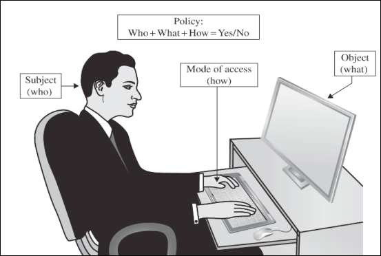
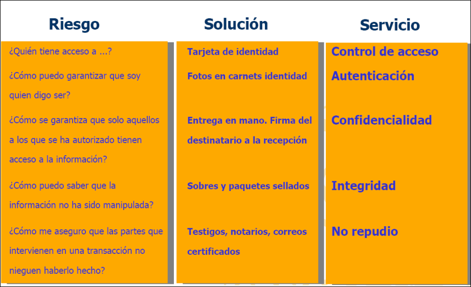

CIBER · curso 3
1. Introducción
La ciberseguridad busca la proteccón de los activos de un sistema informático: los datos, el software, el hardware y las comunicaciones.
Los activos se valoran como elementos reemplazables fácilmente, elementos con especial valor para el negocio/usuario o elementos únicos e irremplazables.
Proteger significa tomar las medidas adecuadas al valor de los activos
1.1 Activos
1.1.1 Los Datos
Los datos son información almacenada/distribuida/compartida en distintos formatos. En los equipos de uso personal cada día hay más datos que buscan los delincuentes. Incluso datos como el DNI pueden usarse para un ataque de suplantación de identidad. Los datos de una empresa pueden ser deseados por competidores, espías, gobiernos, etc., por lo que es fácil ser objetivo de ataques maliciosos.
Hay que valorar cuáles son las medidas más adecuadas para proteger los datos según su valor y lo que supondría su pérdida.
1.1.2 El software
Uno de los objetivos de los atacantes de un sistema es hacerse con el control del software para que trabajen para ellos. Existen dos métodos de ataque básico al software:
- Buscar puntos débiles: fallos del sistema operativo y vulnerabilidades conocidas de los programas instalados.
- Introducir un caballo de Troya: como un gestor de correo que, además de gestionar el correo, envía copia de los mensajes al atacante.
Para protegerse de este tipo de ataques, hay que tener los programas actualizados y evitar instalar programas de procedencia dudosa.
1.1.3 El hardware
Una persona con conocimientos informáticos con acceso físico a un equipo, aún si tener su contraseña, puede hacer muchas averiguaciones sobre él. Los dispositivos móviles suponen un riesgo mayor al tener más posibilidad de extravío o robo. El IoT (Internet of Things) incrementa la superficie de posibles ataques.
No hay que descuidar las medidas de control de acceso físico a instalaciones.
1.1.4 Las comunicaciones
Normalmente, el canal para transmitir información entre equipos es Internet, que emplea múltiples nodos de interconexión a los que tienen acceso muchos usuarios. Esto unido al hecho de que los protocolos de comunicación más empleados no implementan mecanismos de seguridad adecuados, provocan que cualquier persona con acceso a dichos nodos o a alguna de las redes intermedia pueda intercepta y leer/modificar los mensajes.
La solución a este problema es emplear técnicas criptográficas.
1.2 Amenazas
1.2.1 Ataques Aleatorios
Posibles motivaciones:
- Diversión de alguien que busca sistemas mal protegidos para alguna travesura
- Instalar en nuestro sistema programas espía para capturar datos nuestros y aprovecharlos en su beneficio.
- Controlar nuestro sistema para emplearlo como cabeza de puente en ataques contra otros sitios ocultando así su verdadera identidad. Ej: escaneo al azar de direcciónes IP y puertos abiertos.
1.2.2 Ataques Dirigidos
Posibles motivaciones:
- Competencia industrial: interés de una empresa rival en acceder a nuestra comunicaciones internas
- Ataques de organizaciones religiosas, políticas, ONGs que defienden ideas contrapuestas a las de la organización.
- Afán de notoriedad, si somos por ejemplo una empresa con cierta imagen pública.
- Facilidad: ataques a sistemas porque son fáciles de atacar.
Muchas empresas suponen que los ataques siempre son externos, y por eso se dedican a establecer una defensa perimetral, pero los ataques pueden ser internos (provenientes de un empleado descontento o un infiltrado para hacer espionaje industrial.
Método Oportunidad-Objetivo
- Oportunidad: el activo es vulnerable en un determinado aspecto
- Método: existe un mecanismo par atacar dicha vulnerabilidad
- Motivo: existe un interés por parte del atacante
1.3 Servicios básicos de seguridad
-
Disponibilidad: asegurar que la información puede ser utilizado por las partes autorizadas
-
Confidencialidad: asegurar que la información es visto solo por partes autorizadas
-
Integridad: asegurar que la información es modificada únicamente por partes autorizadas.
-
Autenticación: asegurar que el origen de la información es quien dice ser
-
No repudio: impedir que alguien niegue haber realizado una acción cuando efectivamente lo ha hecho
-
Control de acceso: garantizar acceso únicamente a partes autorizadas a los recursos.

